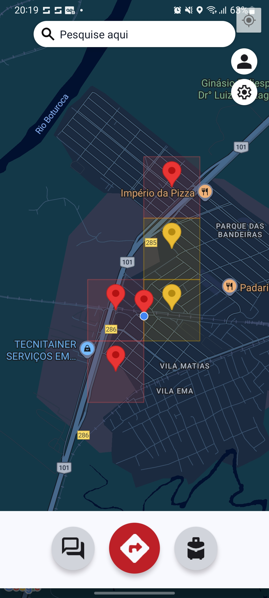
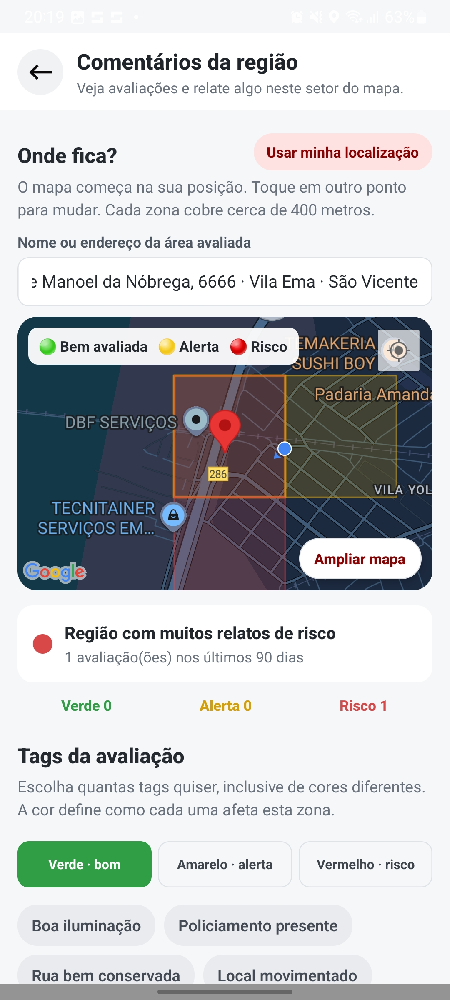
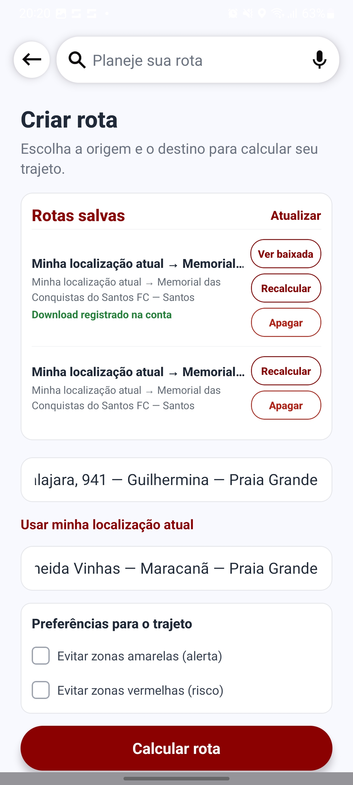
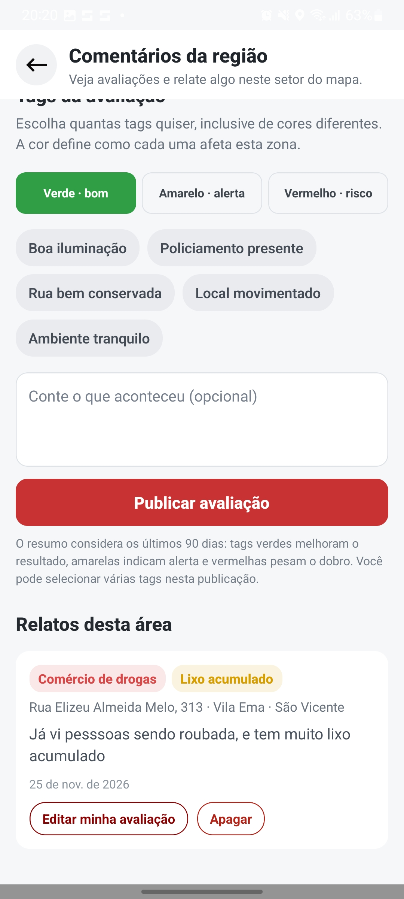
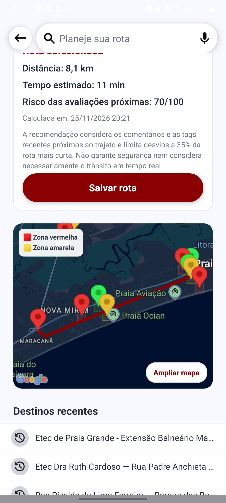
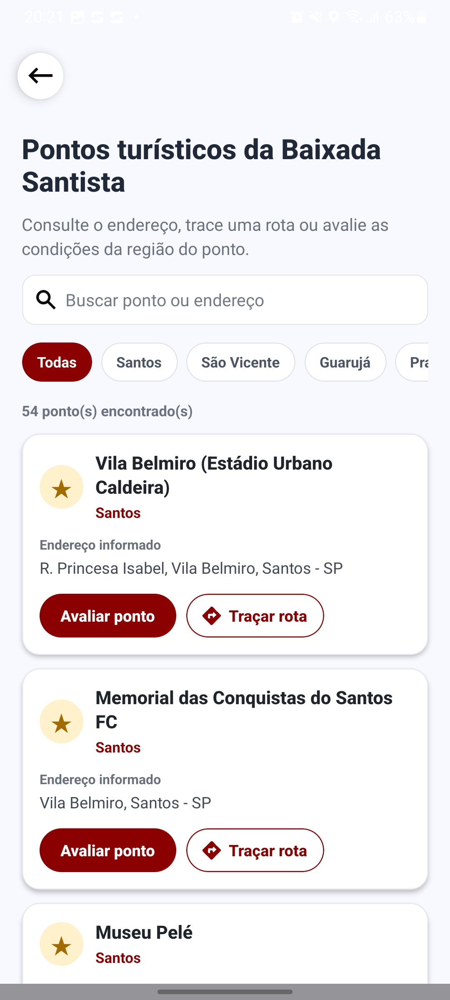

Zona Vermelha · segurança colaborativa
Saiba onde
o risco está.
Aplicativo que mostra no mapa as zonas de risco registradas por outras pessoas e permite que você registre e comente as suas.
Conheça o aplicativo
Um olhar rápido pelas principais ferramentas do Zona Vermelha: mapa colaborativo, avaliações da comunidade e recursos para explorar a cidade.






Baixar o aplicativo
Para instalar o APK, o Android pode pedir para permitir a instalação de apps de fontes desconhecidas nas configurações do navegador usado no download.
- Versão
- 1.1.2
- Sistema
- Android
Como funciona
- 1Consulte o mapaVeja as zonas de risco registradas perto de você.
- 2Visualize uma zonaVeja no mapa as informações e o tipo de risco registrado.
- 3ComenteAcrescente informações em zonas já registradas.
Sobre o TCC
- Curso
- Técnico em Desenvolvimento de Sistemas
- Escola
- Etec Praia Grande
- Integrantes
- Daniel Silva, Felipe Teixeira, Guilherme Sousa Gomes, Lucas Liria e Marcelo Henrique
- Ano
- 2026